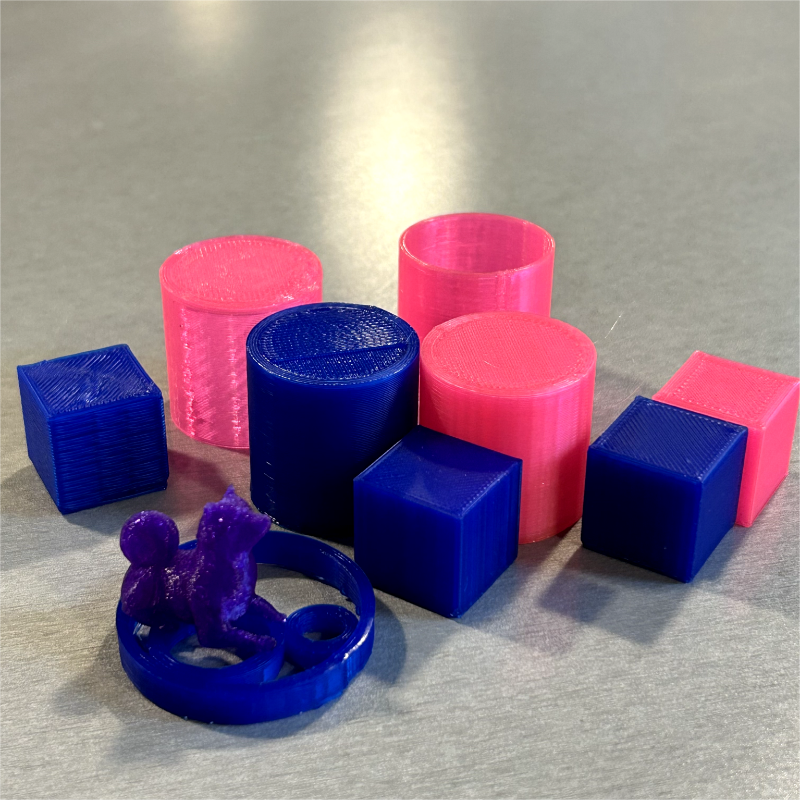
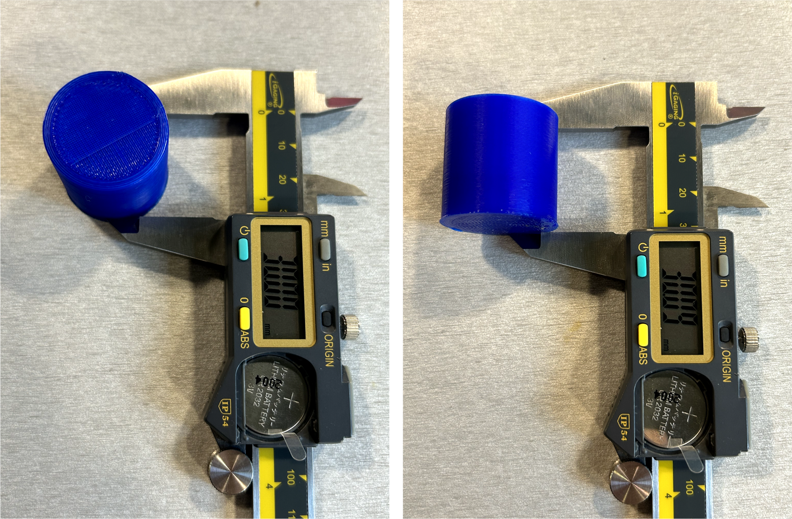
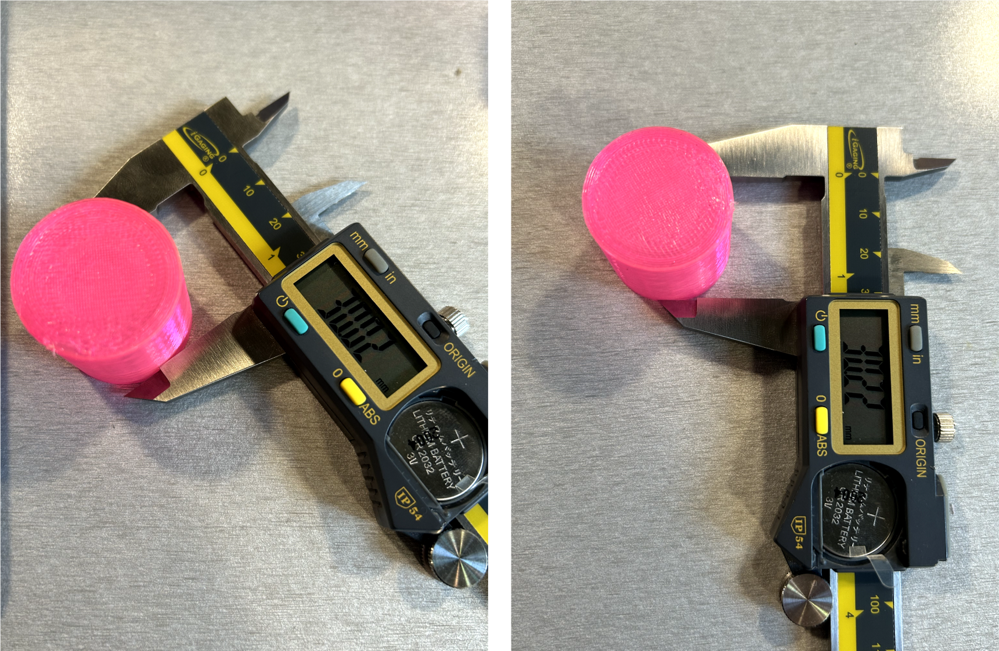

Getting started with 3D printing!
Assignment 3





Printer Setting

Printer that I used was Prusa i3 Mk and Dremel 3D45. Cura doesn't support Dremel printer as a default, so I downloaded the Dremel plugin cura to export the stl file.
Cubes

These are the cube that I printed by Prusa. Each cube has different settings in quality, Extra Coarse, Normal and Extra Fine.
Tubes
A tube 3cm in diameter and 3cm high with a single extrusion wall thickness
A tube 3cm in diameter and 3cm high with a double extrusion wall thickness and random z-seam alignment

Cylinder
For the final deliverable, I assembled every pieces into one unit contains two pieces, and then try to connect them look like a parametric wall.
Nested Objects